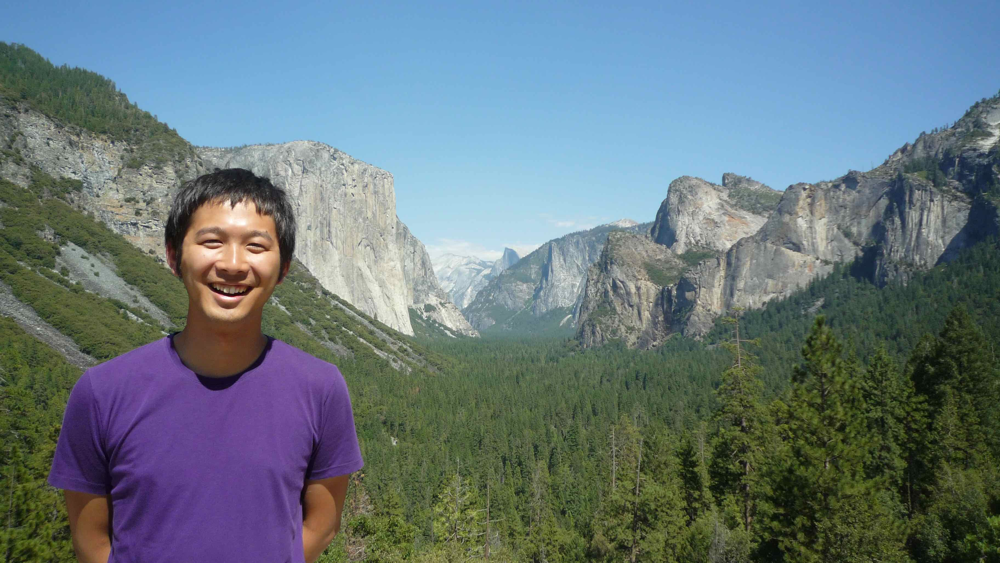

Profile
Name / 名前: Yoshiyuki Inoue / 井上 芳幸
Email: yinoue_at_astro-osaka.jp
Research Fields: High Energy Astrophysics, Black Holes, Active Galactic Nuclei, Relativistic Jets, Cosmic Background Radiation
Missions: CTA (2010-), Fermi (2012-), Hitomi (2012-), NuSTAR (2012-2014), MAGIC (2019-), GRAMS (2019-)
Degrees
- Ph.D., Kyoto University, March 2012
- M.Sc.,Kyoto University, March 2009
- B.Sc.,Kyoto University, March 2007
- Takatsuki High School / 高槻高校, March 2003
Positions
- 客員主管研究員, 理化学研究所数理創造プログラム (09/2020-)
- 客員科学研究員, Kavli IPMU (07/2018-)
- 大阪大学大学院理学研究科 准教授 (2020年9月16日〜現在)
- 理化学研究所数理創造プログラム 上級研究員 (2017年11月 – 2020年9月15日)
- JAXA国際トップヤングフェロー、宇宙航空研究開発機構/宇宙科学研究所（2014年2月 – 2017年10月)
- 日本学術振興会海外研究員、KIPAC/SLAC国立加速器研究所/スタンフォード大学 (2012年4月 – 2014年1月)
- 日本学術振興会特別研究員、京都大学（2009年4月 – 2012年3月)
Awards
Grants
- NASA APRA Proposal (Co-I), US$6,418,218, FY2023 – 2026
“A prototype flight for the GRAMS project” - JSPS Grant-in-Aid for Grant-in-Aid for Challenging Research (Pioneering) (Co-I), ¥25,610,000, 2022/06/30 - 2028/03/31
“Elucidating the origin of heavy elements by a space-based gamma-ray detector using liquid argon”, 22K18277 - 2021年度 ALMA共同科学研究事業 (PI), (A)モデル： 1 PD + ¥1,000,000 (for 3 yrs), FY2021-2023
“ALMAで解き明かす超巨大ブラックホールコロナの磁気活動” - JSPS Grant-in-Aid for Early-Career Scientists (PI), ¥3,770,000, FY2019-2021
“Measuring Magnetic Fields in the Vicinity of Supermassive Blackholes through Radio and X-ray Observations”, 19K14772 - JSPS Grant-in-Aid for Scientific Research on Innovative Areas (Research in a proposed research area) (Co-I), ¥174,330,000, 2018/06/29-2023/03/31
“Toward new frontiers : Encounter and synergy of state-of-the-art astronomical detectors and exotic quantum beams”, 18H05458 - the Leading Initiative for Excellent Young Researchers (LEADER) program by MEXT (卓越研究員), ¥6,000,000 (for 2 yrs) + ¥3,000,000 (for 5 yrs), FY2017-2021
- JSPS Grant-in-Aid for Challenging Research Exploratory (PI), ¥3,510,000, 2016/04/01 \UTF{2013} 2019/03/31
“Probing the origin of the cosmic infrared background radiation using gamma-ray objects”, 16K13813 - Daiwa Foundatoin Grants for UK-Japan Collaboration (Co-I), £3k, FY2016-2017
“Prospect for Future CTA Survey” - JAXA International Top Young Fellowship (PI), ¥2500k/year, 2014/02/01-2019/01/31
“Deciphering the Nature of Supermassive Black Holes Linking Theory and Observations” - NASA Fermi Grant GI Cycle-6 (Co-I), US$59,750, FY2013-2014
“Joint Analysis of Fermi/LAT And Nustar Observations of Blazars” - Hayakawa Sachio Foundation Grant, ¥266,000, FY2013
- JSPS Research Fellowship for Research Abroad, ¥10,512,000, FY2012-2013
「宇宙X線ガンマ線背景放射と活動銀河核の宇宙論的進化」 - JSPS Research Fellowship DC1, ¥2,800,000, FY2009-2011
「GLAST時代の宇宙X線ガンマ線背景放射と活動銀河中心核」
Committee
- 東京大学宇宙線研究所共同利用研究運営委員会委員 (2024 - 2025)
- 日本天文学会代議委員 (2024 - 2027)
- 宇宙線研究者会議 (CRC) 実行委員会委員 (2024)
- 宇宙線研究者会議 (CRC) 実行委員会委員 (2022)
- 理論天文学宇宙物理学懇談会運営委員会委員 (2021 - 2022)
SOC/LOC
| Workshop | Place | Date |
|---|---|---|
| Eleventh Fermi Symposium (International SOC) | Maryland, USA | 2024/9/9-9/13 |
| Beyond Obscuration: Exploring the Innermost Regions of Radio-Quiet AGN through mm Continuum Observations, Special Session in the EAS Meeting (SOC) | Padova, Italy | 2024/7/1 |
| MeVガンマ線天文学：2020年代後半の展望, 天文学会企画セッション (SOC) | Tokyo | 2024/3/11 |
| ICRC2023 (LOC / GA Session Convener) | Osaka | 2023/7/26-8/3 |
| 第35回理論懇シンポジウム (SOC) | Fukushima | 2022/12/21-12/23 |
| 第34回理論懇シンポジウム (SOC) | zoom | 2021/12/22-12/24 |
| 高エネルギー宇宙物理学研究会２０２１ (SOC) | zoom | 2021/11/24-12/26 |
| 第2回MeVガンマ線天文学研究会 (SOC) | Tokyo | 2019/9/26-9/27 |
| 高エネルギー宇宙ニュートリノから展開するマルチメッセンジャー天文学, 天文学会企画セッション (SOC) | Hyogo | 2018/9/19-9/20 |
| PACIFIC 2018 (LOC/co-Chair) | Kiroro,Hokkaido | 2018/2/12-2/19 |
| TeVPA2017 (Gamma rays Session Convener) | Ohio, USA | 2017/8/7-8/11 |
| Ultra-Luminous X-ray Source 研究会 - 多波長で探る降着系の統一描像 - (SOC/LOC) | Sagamihara, Kanagawa | 2017/3/6-3/7 |
| 第1回MeVガンマ線天文学研究会 (SOC) | Kyoto | 2017/2/27-2/28 |
| 超巨大ブラックホール降着円盤スペクトルの解釈を巡って (SOC/LOC) | Sagamihara,Kanagawa | 2015/8/11-12 |
| 宇宙近赤外背景放射の観測と理論 (SOC/LOC) | Sagamihara,Kanagawa | 2014/10/6-10/8 |